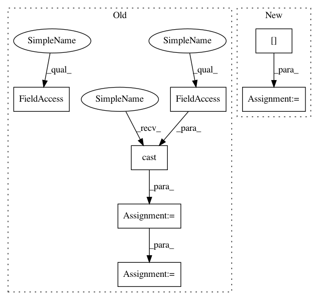

8b9acc51a5e27378a6b337018480ff9434bbf6f8,open_seq2seq/models/seq2seq.py,Seq2Seq,_build_forward_pass_graph,#Seq2Seq#Any#Any#,114
Before Change
}
encoder_output = self.encoder.encode(input_dict=encoder_input)
tgt_length_eval = tf.cast(1.2 * tf.cast(src_length, tf.float32), tf.int32)
decoder_input = {
"encoder_output": encoder_output,
"tgt_sequence": tgt_sequence if self.mode == "train" else None,
// when the mode is not "train", replacing correct tgt_length with
// somewhat increased src_length
"tgt_length": tgt_length if self.mode == "train" else tgt_length_eval
}
decoder_output = self.decoder.decode(input_dict=decoder_input)
decoder_samples = decoder_output.get("samples", None)
if self.mode == "train" or self.mode == "eval":
After Change
source_tensors = input_tensors["source_tensors"]
if self.mode == "train" or self.mode == "eval":
target_tensors = input_tensors["target_tensors"]
with tf.variable_scope("ForwardPass"):
encoder_input = {"source_tensors": source_tensors}
encoder_output = self.encoder.encode(input_dict=encoder_input)
In pattern: SUPERPATTERN
Frequency: 3
Non-data size: 7
Instances
Project Name: NVIDIA/OpenSeq2Seq
Commit Name: 8b9acc51a5e27378a6b337018480ff9434bbf6f8
Time: 2018-05-17
Author: igor.a.gitman@gmail.com
File Name: open_seq2seq/models/seq2seq.py
Class Name: Seq2Seq
Method Name: _build_forward_pass_graph
Project Name: NVIDIA/OpenSeq2Seq
Commit Name: 8b9acc51a5e27378a6b337018480ff9434bbf6f8
Time: 2018-05-17
Author: igor.a.gitman@gmail.com
File Name: open_seq2seq/models/seq2seq.py
Class Name: Seq2Seq
Method Name: _build_forward_pass_graph
Project Name: OpenNMT/OpenNMT-tf
Commit Name: ea2a0bfb9f60f7e03a3ed25244622e0d90b275a5
Time: 2019-03-27
Author: guillaume.klein@systrangroup.com
File Name: opennmt/inputters/record_inputter.py
Class Name: SequenceRecordInputter
Method Name: make_features
Project Name: tryolabs/luminoth
Commit Name: 77b8012989df60009c7a324de603c644f7aa86eb
Time: 2018-03-20
Author: psoto23.ps@gmail.com
File Name: luminoth/models/ssd/ssd_target.py
Class Name: SSDTarget
Method Name: _build